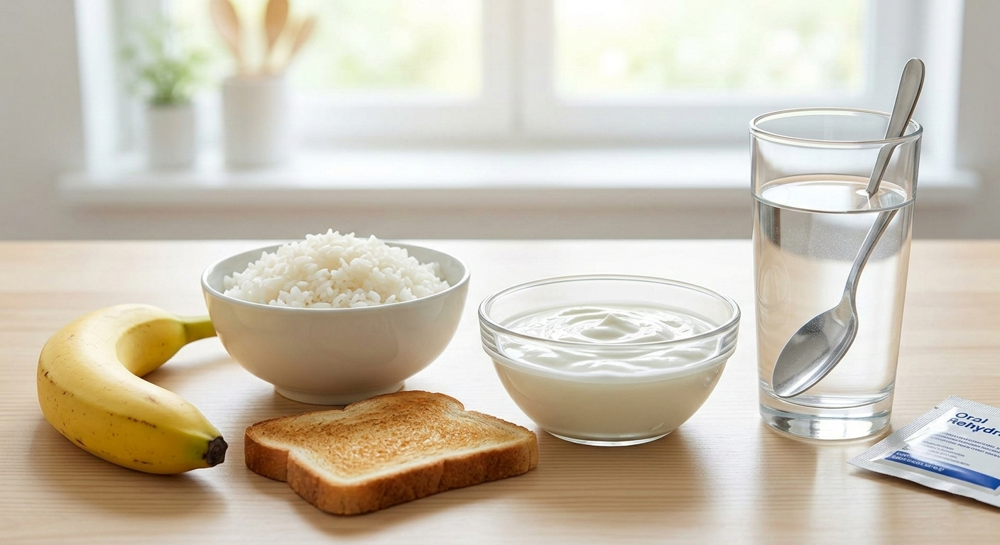

Дијареата е чест и непријатен здравствен проблем кој најчесто поминува сам од себе по неколку дена. Сепак, правилниот домашен третман е клучен за да се спречат компликации, пред сè дехидратација. Главниот фокус при домашното лекување треба да биде на надоместување на течностите, смирување на дигестивниот систем преку соодветна исхрана и обновување на цревната флора.
1. Рехидратација: Најважниот чекор
Губењето на течности и електролити е најопасната последица од дијареата. Затоа, првиот и најважен чекор е континуирана рехидратација.
- Орални рехидратациски соли (ОРС): Ова е најефикасниот начин за враќање на изгубените електролити како натриум и калиум.
- Бистри течности: Пијте многу вода, бистри супи и благи чаеви (како камилица или нане).
- Што да избегнувате: Кафе, алкохол, многу слатки сокови и газирани пијалоци, бидејќи тие можат дополнително да ги иритираат цревата.
2. Исхрана: БРАТ диета и лесна храна
Кога стомакот е вознемирен, потребна му е храна која лесно се вари и која помага во зацврстување на столицата. Најпознатиот пристап е таканаречената БРАТ диета (Банани, Ориз, Пире од јаболка, Тост).

- Банани: Лесни за варење и богати со калиум кој се губи при дијареа.
- Бел ориз и тост: Обезбедуваат енергија без да го оптоваруваат дигестивниот тракт.
- Храна која треба да се избегнува: Млечни производи, мрсна, пржена и силно зачинета храна, како и храна богата со нерастворливи растителни влакна која предизвикува гасови.
3. Пробиотици: Обновување на цревната флора
Пробиотиците се „добри“ бактерии кои помагаат во одржувањето на здрава цревна средина. За време на дијареа, голем дел од овие бактерии се исфрлаат од организмот, па нивното надоместување е од големо значење за брзо закрепнување.
- Пробиотски суплементи: Тие се најбрзиот и најбезбедниот начин да се внесат концентрирани дози на корисни бактерии (како Lactobacillus или Saccharomyces boulardii) за време на акутна дијареа.
- Навремената употреба на пробиотици може значително да го скрати времетраењето на симптомите и да го врати балансот во дигестивниот тракт.
Заклучок: Со правилна рехидратација, внимателна исхрана и употреба на пробиотици, повеќето случаи на дијареа успешно се менаџираат во домашни услови. Слушајте го вашето тело и не брзајте со враќање кон вообичаената исхрана додека симптомите целосно не се повлечат.